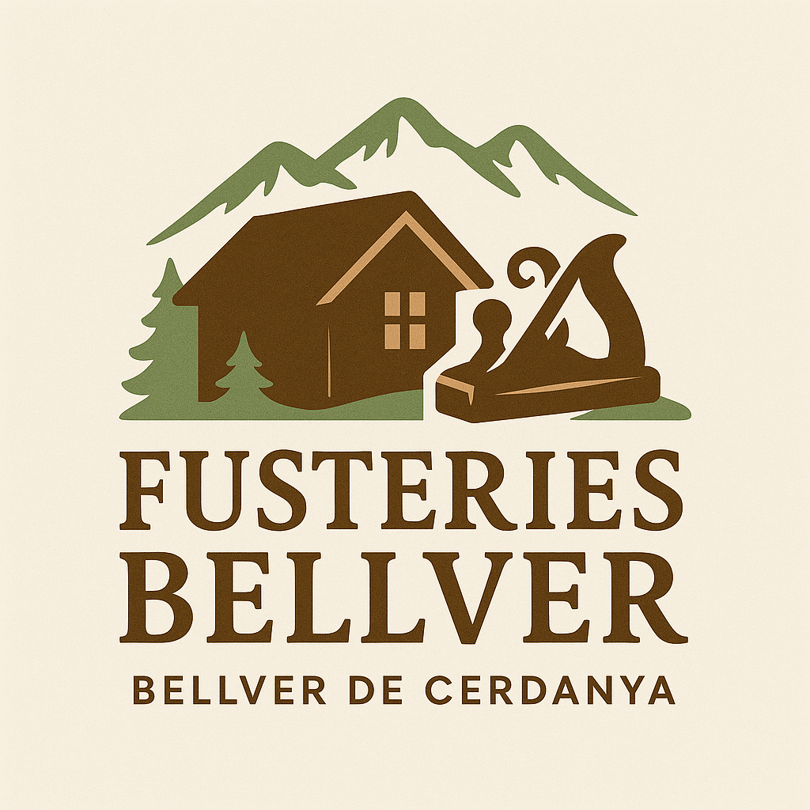
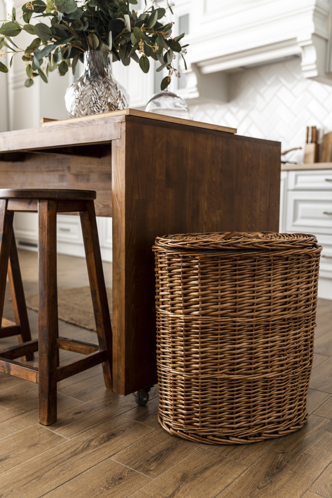
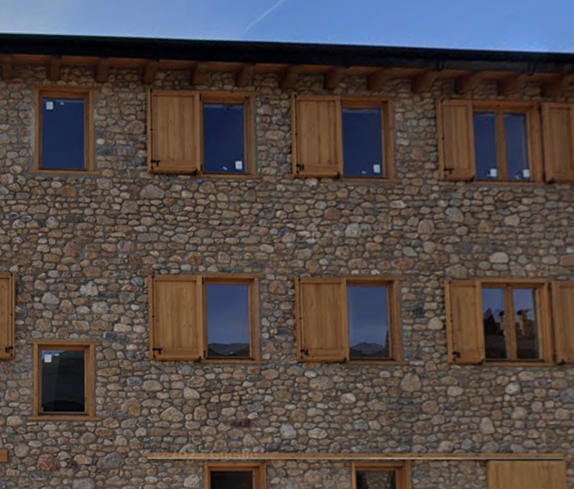
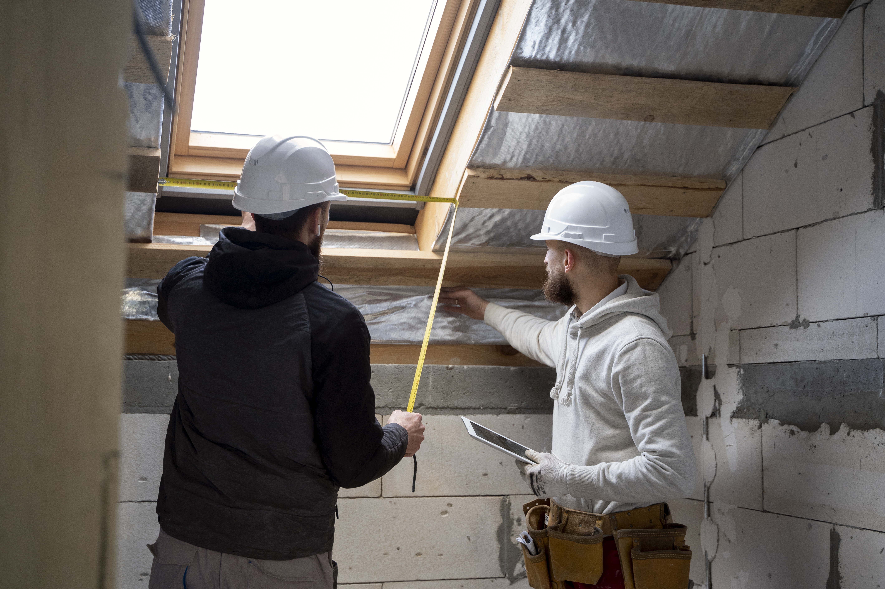

Mobles a mida, portes, finestres i més amb acabats professionals.

Creació de mobles únics per a cada espai.

Fusteria exterior amb materials duradors i naturals.

Adaptació i renovació de locals i habitatges.
📞 Telèfon de contacte: 650943338
📍 Direcció del taller: Carrer Joan Margall 13, Bellver de Cerdanya